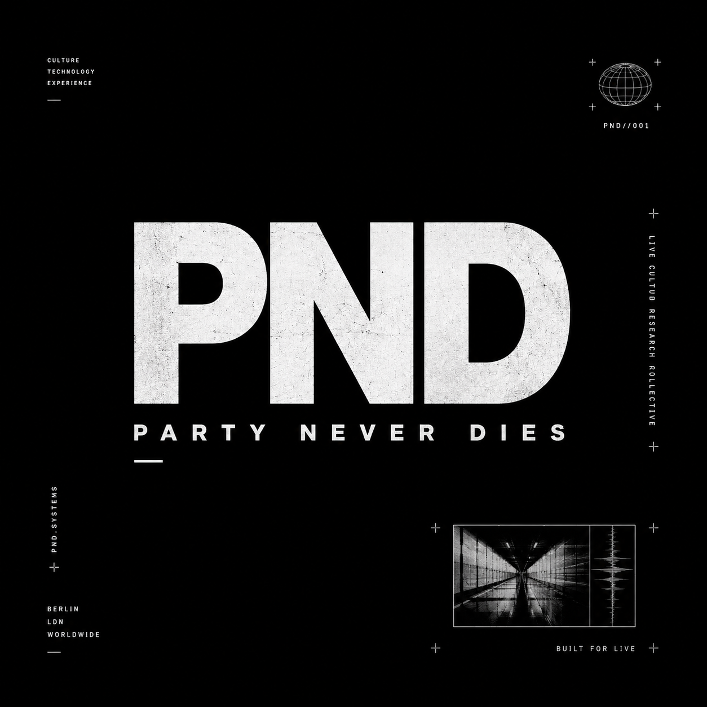

Culture
Rooted in underground scenes and lived metropolitan energy.
 Collective +
Collective +
Culture / Technology / Experience / Underground Energy

A culture-driven collective exploring the intersection of technology, experience, art and underground energy.
002 // Manifesto
PND treats live culture as infrastructure: a collision of sound, visual systems, environments, artists, audiences and technology. The visual language is raw, high-contrast and built from rail corridors, concrete textures, shadow-heavy architecture and strict editorial grids.
Rooted in underground scenes and lived metropolitan energy.
Systems, interfaces and technical design built around live moments.
Events and environments designed to stay in memory.
Sound, movement, people, pressure and momentum.